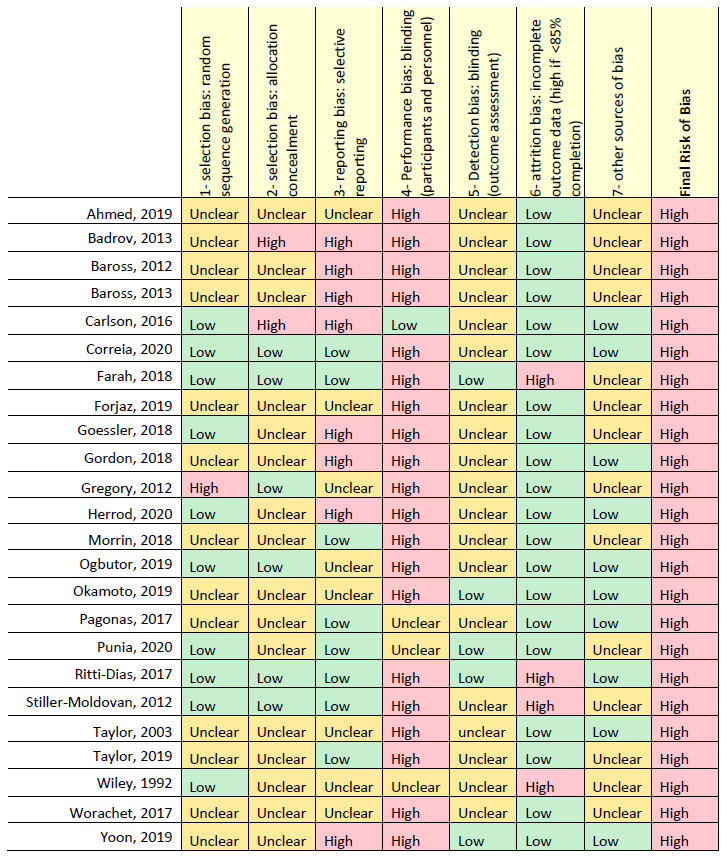

Extract a table from a pdf
In a couple of days, I am going to conduct a pre-conference workshop for Malaysian R conference 2021. So, some of the data that I am going to use for this workshop is available in a table in pdf form. Hence, this post is about how I get that particular table from the pdf into R for further analysis.
So, this is a table we going to extract.

Extracting a table from pdf
We going to use tabulizer package for this. However, not every pdf works with this package. In our case, it works but need further preprocessing.
Load the required packages.
library(tabulizer)
library(dplyr)
library(stringr)Read a table from a pdf.
raw_table <- extract_tables("https://static-content.springer.com/esm/art%3A10.1038%2Fs41440-021-00720-3/MediaObjects/41440_2021_720_MOESM1_ESM.pdf",
pages = 17,
output = "data.frame")So, this is the extracted table.
raw_table[[1]] %>% head(10)## X X.1 X.2 X.3 X.4 X.5 X.6 X.7 X.8
## 1
## 2
## 3 Ahmed, 2019 Unclear Unclear Unclear High Unclear Low Unclear High
## 4
## 5 Badrov, 2013 Unclear High High High Unclear Low Unclear High
## 6 Baross, 2012 Unclear Unclear High High Unclear Low Unclear High
## 7 Baross, 2013 Unclear Unclear High High Unclear Low Unclear High
## 8 Carlson, 2016 Low High High Low Unclear Low Low High
## 9 Correia, 2020 Low Low Low High Unclear Low Low High
## 10
## X.9
## 1 1- selection bias: random
## 2 sequence generation
## 3 2- selection bias: allocation
## 4 concealment
## 5
## 6 3- reporting bias: selective
## 7 reporting
## 8
## 9 4- Performance bias: blinding
## 10 (participants and personnel)So, a few preprocessing steps needed:
- Remove column X.9 - this column supposed to be a header
- Rename a header based on column X.9
- Remove a space between the author name - “Ahmed,2019” instead of “Ahmed, 2019”
- Remove empty rows
irt_rob <-
raw_table[[1]] %>%
select(-X.9) %>%
rename(Study = X,
Random.sequence.generation. = X.1,
Allocation.concealment. = X.2,
Selective.reporting. = X.3,
Blinding.of.participants.and.personnel. = X.4,
Blinding.of.outcome.assessment = X.5,
Incomplete.outcome.data = X.6,
Other.sources.of.bias. = X.7,
Overall = X.8) %>%
as_tibble() %>%
mutate(Study = str_replace_all(Study, " ", "")) %>%
mutate(id_del = str_match(Study, ".")) %>%
filter(!is.na(id_del)) %>%
select(-id_del)Finally, our data is ready.
irt_rob## Study Random.sequence.generation. Allocation.concealment.
## 1 Ahmed,2019 Unclear Unclear
## 2 Badrov,2013 Unclear High
## 3 Baross,2012 Unclear Unclear
## 4 Baross,2013 Unclear Unclear
## 5 Carlson,2016 Low High
## Selective.reporting. Blinding.of.participants.and.personnel.
## 1 Unclear High
## 2 High High
## 3 High High
## 4 High High
## 5 High Low
## Blinding.of.outcome.assessment Incomplete.outcome.data Other.sources.of.bias.
## 1 Unclear Low Unclear
## 2 Unclear Low Unclear
## 3 Unclear Low Unclear
## 4 Unclear Low Unclear
## 5 Unclear Low Low
## Overall
## 1 High
## 2 High
## 3 High
## 4 High
## 5 HighTengku Muhammad Hanis
Lead academic trainer
My research interests include medical statistics and machine learning application.